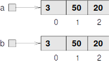

Arrays en referenties
Contents
Arrays en referenties#
Een array is een datastructuur, waarbij meerdere waardes van een bepaald datatype opgeslagen worden.
Dit biedt de mogelijkheid om aan één variabele meerdere waardes toe te kennen.
Een waarde in een array wordt een element genoemd. Elk element heeft een index, een getal dat de positie van het element in de array aangeeft. Een index wordt geteld vanaf 0.
Een waarde (element) in een array wordt benaderd door tussen blokhaken de index te zetten van het gewenste element, bijvoorbeeld
System.out.println(scores[2]); // De derde score
Arrays declareren en maken#
Een array wordt als volgt gedeclareerd:
<type>[] <naam>
Bijvoorbeeld:
int[] scores; // Array van integers met naam 'scores'
String[] namen; // Array van strings met naam 'namen'
Een alternatieve wijze om arrays te declareren is:
<type> <naam>[];
Voordat een array kan worden gebruikt, moet deze worden gemaakt. De declaratie geeft namelijk alleen maar aan dat er een array is waar de gedeclareerde variabele naar verwijst, maar daarmee bestaat de daadwerkelijke array nog niet.
Array maken:
<naam> = new[<aantal elementen>];
Bijvoorbeeld:
scores = new int[10]; // Array met 10 integers
namen = new String[30]; // Array met 30 strings
Het declareren en maken van de array kan ook gecombineerd worden:
<type>[] <naam> = new[<aantal elementen>];
Bijvoorbeeld:
int[] scores = new int[10]; // Array met 10 integers
String[] namen = new String[30]; // Array met 30 strings
Arrays gebruiken#
Het benaderen van een element, gebeurt door de index tussen blokhaken achter de naam van de array te plaatsen:
<naam>[<index>]
Bijvoorbeeld:
scores[0]=5;
scores[1]=10;
System.out.println("Score met index 1: "+scores[1]);
namen[0]="Henk";
namen[1]="Els";
System.out.println(namen[0]+" en "+namen[1]);
Score met index 1: 10
Henk en Els
Arrays initialiseren#
Ook elementen die nog niet een waarde toegekend hebben gekregen, zijn te benaderen.
Bijvoorbeeld:
int[] scores = new int[3];
scores[0]=10;
scores[2]=5;
System.out.println("Score index 0: "+scores[0]);
System.out.println("Score index 1: "+scores[1]);
System.out.println("Score index 2: "+scores[2]);
Score index 0: 10
Score index 1: 0
Score index 2: 5
Waardes in een array worden geïnitialiseerd met de waarde 0, nadat de array is gemaakt. Voor niet-numerieke types wordt een waarde toegekend die enigszins vergelijkbaar is met 0.
type |
geïnitialiseerde waarde |
|---|---|
byte, short, int, long |
0 |
double, float |
0.0 |
boolean |
false |
char |
‘\0’ (ASCII 0) |
String |
null |
De waarde null is van toepassing op niet-primitieve types en betekent dat een instantie (in dit geval een string) niet aanwezig is.
Een array kan ook in één keer geïntialiseerd worden door de waardes tussen accolades te plaatsen:
<type>[] <naam> = new <type>[] { waarde1, waarde2, etc.. };
of
<type>[] <naam> = { waarde1, waarde2, etc.. };
Bijvoorbeeld:
int[] scores = new int[] { 10, 4, 3, 22 };
String[] namen = { "Henk", "Jan", "Els" };
Als initialisatie in één keer plaatsvindt, dan kan het new-keyword achterwege worden gelaten. Deze wijze van initialiseren heeft wel beperkingen: Alleen mogelijk in combinatie met declaratie van een array, en alle waardes moeten meegegeven worden (gedeeltelijk initialiseren kan niet).
Arrays weergeven#
Een array printen op de console, laat niet de waardes zien:
System.out.println(scores);
[I@49143c03
Wat wordt getoond is niet de inhoud van de array, maar het geheugenadres.
Om de waardes te laten zien, moeten deze stuk voor stuk worden geprint.
Dit is eenvoudig te realiseren met een for-loop:
for(int i=0; i<3; i++) {
System.out.println("Score index "+i+": "+scores[i]);
}
Score index 0: 10
Score index 1: 4
Score index 2: 3
In bovenstaand voorbeeld is de lengte van de array ‘hardcoded’ aanwezig.
Om fouten te voorkomen, wordt meestal de length-property van een array gebruikt:
for(int i=0; i<scores.length; i++) {
System.out.println("Score index "+i+": "+scores[i]);
}
Score index 0: 10
Score index 1: 4
Score index 2: 3
Score index 3: 22
Arrays doorlopen#
Met een loop kan een array worden doorlopen. Niet alleen om te printen, maar ook voor operaties op de elementen.
Bijvoorbeeld alle scores met 1 verhogen:
for(int i=0; i<scores.length; i++) {
scores[i]=scores[i]+1; // score met 1 verhogen
}
System.out.println("Nieuwe scores:");
for(int i=0; i<scores.length; i++) {
System.out.println("Score index "+i+": "+scores[i]);
}
Nieuwe scores:
Score index 0: 11
Score index 1: 5
Score index 2: 4
Score index 3: 23
Uiteraard kan in plaats van een for-loop ook een while-loop worden gebruikt.
Per situatie moet worden bekeken welk type loop het meest geschikt is.
Arrays kopieëren#
Wat gebeurt er als een array aan een andere variabele wordt toegekend? Uiteraard moet deze variabele een array van hetzelfde type zijn.
Bijvoorbeeld:
int[] a = { 3, 50, 20 };
int[] b;
b=a;
a[1]++;
System.out.println(a[1]+" "+b[1]);
51 51
Een verandering in array a, is ook zichtbaar in array b.
Oorzaak: a en b verwijzen naar dezelfde array

Toekenning van een array aan een andere variabele, kopieëert de inhoud van de array niet, maar alleen de referentie.
Een array kan gekopiëerd worden, door een array van hetzelfde type en dezelfde grootte te maken, en de elementen stuk voor stuk te kopieëren met een for-loop:
int[] a = { 3, 50, 20 };
int[] b = new int[a.length];
for(int i=0; i<a.length; i++) {
b[i]=a[i];
}
a[1]++;
System.out.println(a[1]+" "+b[1]);
51 50
Een verandering in array a, is niet zichtbaar in array b.
oorzaak: a en b verwijzen naar verschillende arrays

Een andere manier om een array te kopieëren is gebruik maken van de methode Arrays.copyOf().
Voorbeeld:
int[] a = { 3, 50, 20 };
int[] b = Arrays.copyOf(a, a.length);
Willekeurige getallen#
Soms is het nodig dat een computerprogramma onvoorspelbaar is. Bijvoorbeeld spelletjes. Een computer is daarom in staat om willekeurige getallen te generen.
Met Java kan dat op de volgende wijze:
Random random = new Random();
int willekeurigGetal=random.nextInt(100); // Willekeurig getal, van 0 tot 100 (99 is het hoogste getal)
System.out.println(willekeurigGetal);
50
De klasse Random wordt geïmporteerd uit de package java.util.Random.
De methode nextInt() kan ook gebruikt worden om een willekeurig element uit een array te halen.
Voorbeeld:
String[] namen = { "Henk", "Els", "Jan", "Moniek" };
Random random = new Random();
String willekeurigeNaam=namen[random.nextInt(namen.length)];
System.out.println(willekeurigeNaam);
Els
Enhanced for-loop#
Voor de standaard for-loop om een array te doorlopen is een alternatief: De enhanced for-loop. Deze wordt ook wel for-each loop genoemd.
Voorbeeld:
int[] values = { 10, 7, -1, 5 };
// Standaard for-loop
for (int i = 0; i < values.length; i++) {
int value = values[i];
System.out.println(value);
}
// Bovenstaande loop is de vervangen door:
for (int value : values) {
System.out.println(value);
}
10
7
-1
5
10
7
-1
5
Voordeel van de enhanced for-loop is de eenvoudige syntax. Er is dan echter geen index beschikbaar. Per situatie moet worden bekeken welk type loop het meest geschikt is.